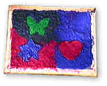
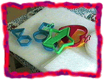
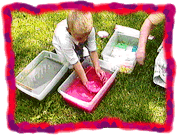
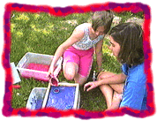
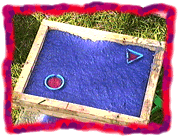
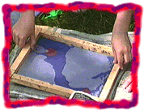
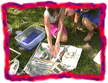
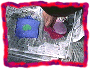
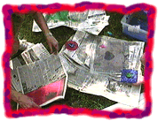
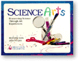

| |
NEWspaper |
Make your own paper:
Papermaking is a great way to re-use old newspaper. We made our paper more colorful by mixing pieces of construction paper with our slurry.You'll need: 
|
 collect screens & cookie cutters |
 lift screen up through slurry |
|
 or pour slurry on screen |
 drain for a minute |
 flip over on sheet of newspaper |
|
 blot with more newspaper |
 carefully lift screen |
 cover with newspaper & let dry |

|
When was the first paper made? How could you mold the paper into a three dimensional form? Try adding a perfume or extract to your paper. |
|
 |
|
|
||
|
||
|
|
||
 Gathered by topic |
 Connected together |
 Index of ideas |
 Search |


 Paper tower
Paper tower